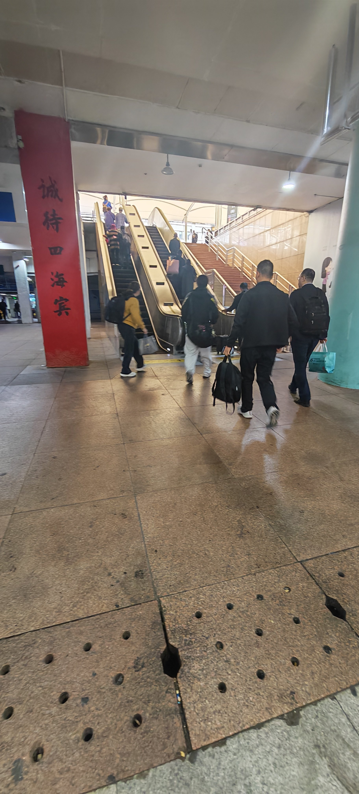
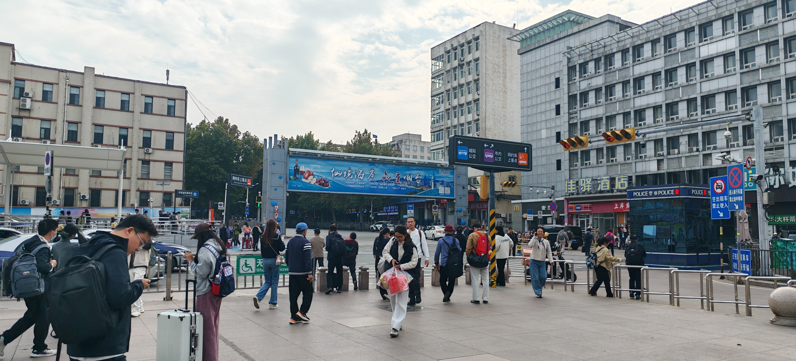
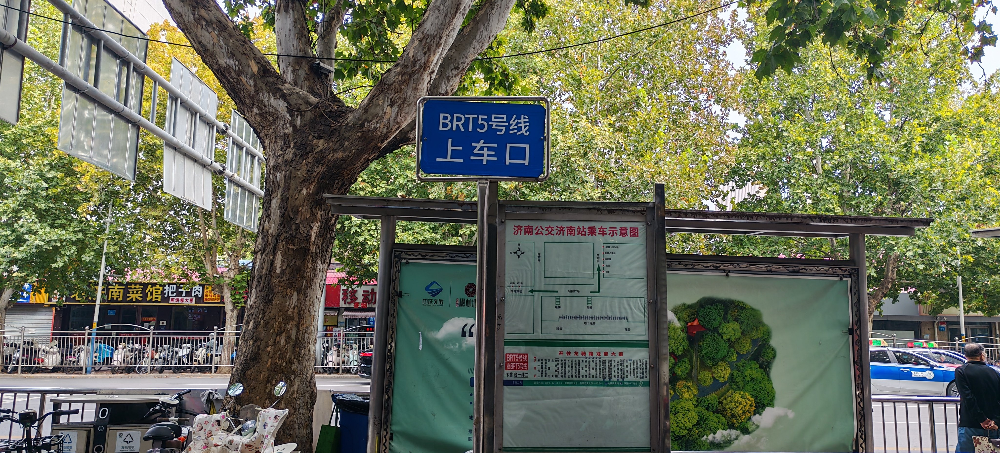
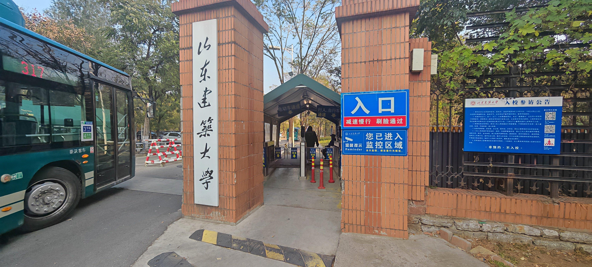

路线流程
1.从济南站南出站口出站
2.出站后通过扶梯上到地表
3.然后位于左手边找到标志性广告牌从而找到公交车站
4.乘坐公交车BRT5号线公交车，方向开往龙池路龙鼎大道
5.乘坐19站后在“地铁浆水泉路”站下车（全程约53分钟）
6.然后站内换乘317路公交车，方向开往建大新校区
7.乘坐6站后在“新校区西门”站下车（全程约34分钟）
8.下车后往北走即可从山东建筑大学西门入校
前往公交站
识别出站口
出站口如下图所示

济南站南出站口
寻找公交站
出站后通过右手的扶梯上行到达地表（如下图）

扶梯
上行到地表后往右手方向前进寻找地标广告牌，广告牌所处位置车辆向南走向的人行道位置即是济南站公交停靠站（即下图广告牌右侧道路）

广告牌地标
公交等候区的尽头就是BRT5号线公交车的停靠点，方向是龙池路龙鼎大道，等车上车即可

BRT5公交站
购票相关
 开通济南的支付宝快捷交通码（推荐）
开通济南的支付宝快捷交通码（推荐）

因为山建大部分设施都只支持支付宝，所以为了图省事可以直接用支付宝的扫码登车
开通369出行快捷交通码
属于济南的交通软件
乘坐19站于“地铁浆水泉路”下车，同站乘坐317路公交车，方向是建大新校区

线路图
乘坐6站后在“新校区西门”站下车，后往北走即可从山东建筑大学西门处入校，后续报道指南可查看《西门入校手册》

山东建筑大学西门
《西门入校指南》